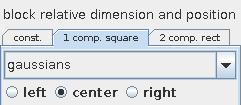
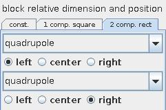

CITY PLOT
The city plot module creates a plot of blocks based on the value of a scalar regular 2D field. The color and height of the block are determined independently by selectable input data components at that node.
Input data
The input field is regular 2D with affine geometry.
Output data
The output is a geometry object.
Computation parameters
The graph component drop down list selects the component of the input to map to the height of the block at that point of the grid. By default the first component is used.
In graph type menu the user defines if the graph is zero based or minimum based. For zero based graphs blocks are drawn beginning from zero value. For minimum based graphs blocks are drawn beginning from the minimum value. By default the graph is zero based.
Left mouse dragging at the graph scale slider scales the input height value. If check box on the right hand side is on the user is able to change minimum, maximum and current value typing the values into the text fields.
The block relative dimension and position menu allows to change blocks and their position.
In the const part the user adjusts size and position of the blocks in x- and y-direction using the
block size and position sliders for x and y components.

1 comp. square part allows to adjust the size of the base square of the blocks dependently on the value of the field component which is chosen in the drop down list and to put the position of the blocks at left, center or right side.

In 2 comp. square part two components are chosen in two different drop down lists and placed in left, center or right position.
Presentation parameters
Presentation tab contents are described in the common interfaces section unter the Presentation Panel entry.